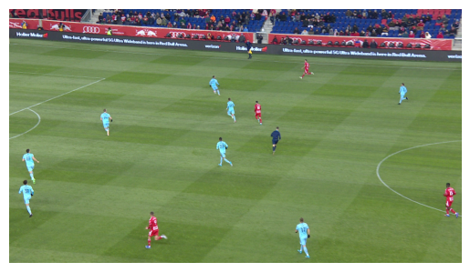
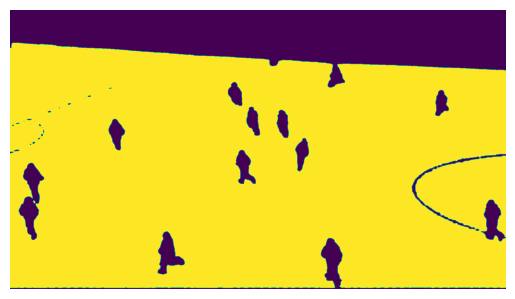
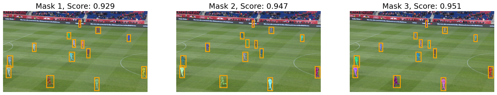
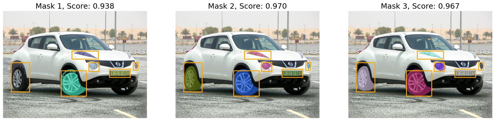
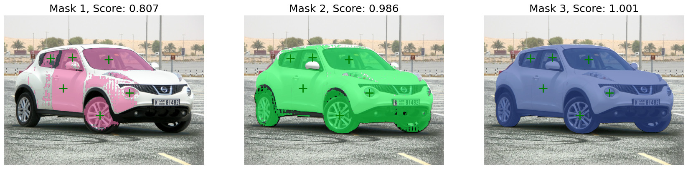
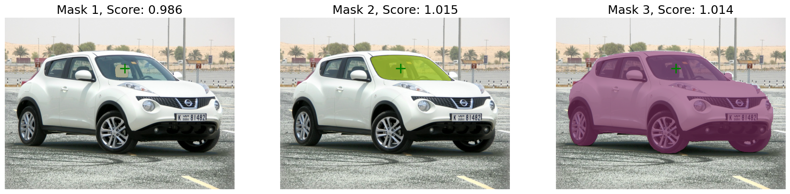
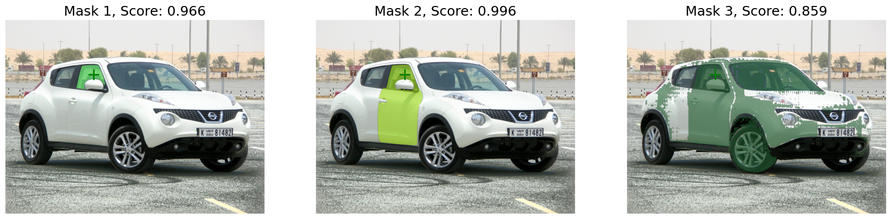
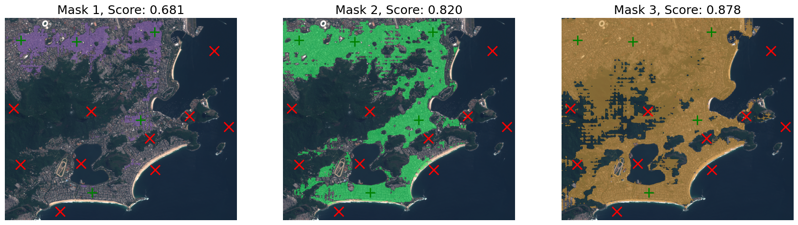
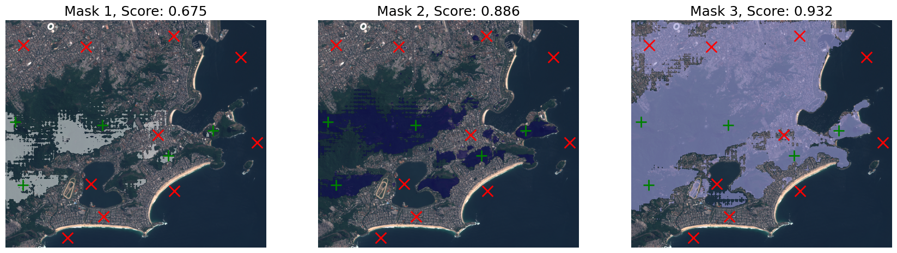
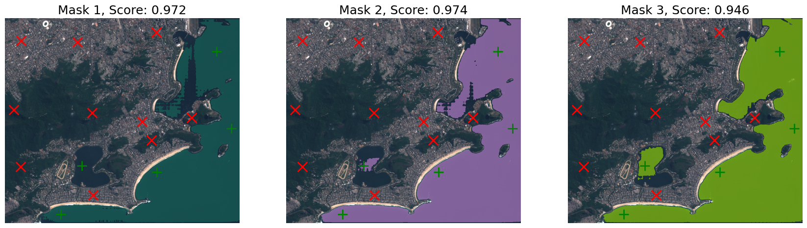

%%capture
!pip install kornia
!pip install kornia-rsVisual Prompter: Segment Anything
Intermediate
Segmentation
kornia.contrib
This tutorials shows how to use our high-level API Visual Prompter. This API allow to set an image, and run multiple queries multiple times on this image. These query can be done with three types of prompts.

This tutorials shows how to use our high-level API Visual Prompter. This API allow to set an image, and run multiple queries multiple times on this image. These query can be done with three types of prompt:
- Points: Keypoints with
(x, y)and a respective label. Where 0 indicates a background point; 1 indicates a foreground point; - Boxes: Boxes of different regions.
- Masks: Logits generated by the model in a previous run.
Read more on our docs: https://kornia.readthedocs.io/en/latest/models/segment_anything.html
This tutorials steps:
- Setup the desired SAM model and import the necessary packages
- How to instantiate the Visual Prompter
- Using the Visual Prompter
Setup
First let’s choose the SAM type to be used on our Visual Prompter.
The options are (smaller to bigger):
| model_type | checkpoint official |
|---|---|
| vit_b | https://dl.fbaipublicfiles.com/segment_anything/sam_vit_b_01ec64.pth |
| vit_l | https://dl.fbaipublicfiles.com/segment_anything/sam_vit_l_0b3195.pth |
| vit_h | https://dl.fbaipublicfiles.com/segment_anything/sam_vit_h_4b8939.pth |
model_type = "vit_h"
checkpoint = "https://dl.fbaipublicfiles.com/segment_anything/sam_vit_h_4b8939.pth"Then let’s import all necessary packages and modules
from __future__ import annotations
import os
import matplotlib.pyplot as plt
import torch
from kornia.contrib.models.sam import SamConfig
from kornia.contrib.visual_prompter import VisualPrompter
from kornia.geometry.boxes import Boxes
from kornia.geometry.keypoints import Keypoints
from kornia.io import ImageLoadType, load_image
from kornia.utils import get_cuda_or_mps_device_if_available, tensor_to_imagedevice = get_cuda_or_mps_device_if_available()
print(device)NoneUtilities functions
import io
import requests
def download_image(url: str, filename: str = "") -> str:
filename = url.split("/")[-1] if len(filename) == 0 else filename
# Download
bytesio = io.BytesIO(requests.get(url).content)
# Save file
with open(filename, "wb") as outfile:
outfile.write(bytesio.getbuffer())
return filename
soccer_image_path = download_image("https://raw.githubusercontent.com/kornia/data/main/soccer.jpg")
car_image_path = download_image("https://raw.githubusercontent.com/kornia/data/main/simple_car.jpg")
satellite_image_path = download_image("https://raw.githubusercontent.com/kornia/data/main/satellite_sentinel2_example.tif")
soccer_image_path, car_image_path, satellite_image_path('soccer.jpg', 'simple_car.jpg', 'satellite_sentinel2_example.tif')def colorize_masks(binary_masks: torch.Tensor, merge: bool = True, alpha: None | float = None) -> list[torch.Tensor]:
"""Convert binary masks (B, C, H, W), boolean tensors, into masks with colors (B, (3, 4) , H, W) - RGB or RGBA. Where C refers to the number of masks.
Args:
binary_masks: a batched boolean tensor (B, C, H, W)
merge: If true, will join the batch dimension into a unique mask.
alpha: alpha channel value. If None, will generate RGB images
Returns:
A list of `C` colored masks.
"""
B, C, H, W = binary_masks.shape
OUT_C = 4 if alpha else 3
output_masks = []
for idx in range(C):
_out = torch.zeros(B, OUT_C, H, W, device=binary_masks.device, dtype=torch.float32)
for b in range(B):
color = torch.rand(1, 3, 1, 1, device=binary_masks.device, dtype=torch.float32)
if alpha:
color = torch.cat([color, torch.tensor([[[[alpha]]]], device=binary_masks.device, dtype=torch.float32)], dim=1)
to_colorize = binary_masks[b, idx, ...].view(1, 1, H, W).repeat(1, OUT_C, 1, 1)
_out[b, ...] = torch.where(to_colorize, color, _out[b, ...])
output_masks.append(_out)
if merge:
output_masks = [c.max(dim=0)[0] for c in output_masks]
return output_masks
def show_binary_masks(binary_masks: torch.Tensor, axes) -> None:
"""plot binary masks, with shape (B, C, H, W), where C refers to the number of masks.
will merge the `B` channel into a unique mask.
Args:
binary_masks: a batched boolean tensor (B, C, H, W)
ax: a list of matplotlib axes with lenght of C
"""
colored_masks = colorize_masks(binary_masks, True, 0.6)
for ax, mask in zip(axes, colored_masks):
ax.imshow(tensor_to_image(mask))
def show_boxes(boxes: Boxes, ax) -> None:
boxes_tensor = boxes.to_tensor(mode="xywh").detach().cpu().numpy()
for box in boxes_tensor:
x0, y0, w, h = box
ax.add_patch(plt.Rectangle((x0, y0), w, h, edgecolor="orange", facecolor=(0, 0, 0, 0), lw=2))
def show_points(points: tuple[Keypoints, torch.Tensor], ax, marker_size=200):
coords, labels = points
pos_points = coords[labels == 1].to_tensor().detach().cpu().numpy()
neg_points = coords[labels == 0].to_tensor().detach().cpu().numpy()
ax.scatter(pos_points[:, 0], pos_points[:, 1], color="green", marker="+", s=marker_size, linewidth=2)
ax.scatter(neg_points[:, 0], neg_points[:, 1], color="red", marker="x", s=marker_size, linewidth=2)from kornia.contrib.models import SegmentationResults
def show_image(image: torch.Tensor):
plt.imshow(tensor_to_image(image))
plt.axis("off")
plt.show()
def show_predictions(
image: torch.Tensor,
predictions: SegmentationResults,
points: tuple[Keypoints, torch.Tensor] | None = None,
boxes: Boxes | None = None,
) -> None:
n_masks = predictions.logits.shape[1]
fig, axes = plt.subplots(1, n_masks, figsize=(21, 16))
axes = [axes] if n_masks == 1 else axes
for idx, ax in enumerate(axes):
score = predictions.scores[:, idx, ...].mean()
ax.imshow(tensor_to_image(image))
ax.set_title(f"Mask {idx+1}, Score: {score:.3f}", fontsize=18)
if points:
show_points(points, ax)
if boxes:
show_boxes(boxes, ax)
ax.axis("off")
show_binary_masks(predictions.binary_masks, axes)
plt.show()Exploring the Visual Prompter
The VisualPrompter can be initialized from a ModelConfig structure, where now we just have support for the SAM model through the SamConfig. Through this config the VisualPrompter will initialize the SAM model and load the weights (from a path or a URL).
What the VisualPrompter can do? 1. Based on the ModelConfig, besides the model initialization, we will setup the required transformations for the images and prompts using the kornia.augmentation API within the Augmentation sequential container. 1. You can benefit from using the torch.compile(...) API (dynamo) for torch >= 2.0.0 versions. To compile with dynamo we provide the method VisualPrompter.compile(...) which will optimize the right parts of the backend model and the prompter itself. 1. Caching the image features and transformations. With the VisualPrompter.set_image(...) method, we transform the image and already encode it using the model, caching it’s embeddings to query later. 1. Query multiple times with multiple prompts. Using the VisualPrompter.predict(...), where we will query on our cached embeddings using Keypoints, Boxes and Masks as prompt.
What the VisualPrompter and Kornia provides? Easy high-levels structures to be used as prompt, also as the result of the prediction. Using the kornia geometry module you can easily encapsulate the Keypoints and Boxes, which allow the API to be more flexible about the desired mode (mainly for boxes, where we had multiple modes of represent it).
The Kornia VisualPrompter and model config for SAM can be imported as follow:
from kornia.contrib.image_prompter import VisualPrompter
from kornia.contrib.models import SamConfig# Setting up a SamConfig with the model type and checkpoint desired
config = SamConfig(model_type, checkpoint)
# Initialize the VisualPrompter
prompter = VisualPrompter(config, device=device)Set image
First, before adding the image to the prompter, we need to read the image. For that, we can use kornia.io, which internally uses kornia-rs. If you do not have kornia-rs installed, you can install it with pip install kornia_rs. This API implements the DLPack protocol natively in Rust to reduce the memory footprint during the decoding and type conversion. Allowing us to read the image from the disk directly to a tensor. Note that the image should be scaled within the range [0,1].
# Load the image
image = load_image(soccer_image_path, ImageLoadType.RGB32, device) # 3 x H x W
# Display the loaded image
show_image(image)
With the image loaded onto the same device as the model, and with the right shape 3xHxW, we can now set the image in our image prompter. Attention: when doing this, the model will compute the embeddings of this image; this means, we will pass this image through the encoder, which will use a lot of memory. It is possible to use the largest model (vit-h) with a graphic card (GPU) that has at least 8Gb of VRAM.
prompter.set_image(image)If no error occurred, the features needed to run queries are now cached. If you want to check this, you can see the status of the prompter.is_image_set property.
prompter.is_image_setTrueExamples of prompts
The VisualPrompter output will have the same Batch Size that its prompts. Where the output shape will be (B, C, H, W). Where B is the number of input prompts, C is determined by multimask output parameter. If multimask_output is True than C=3, otherwise C=1
Keypoints
Keypoints prompts is a tensor or a Keypoint structure within coordinates into (x, y). With shape BxNx2.
For each coordinate pair, should have a corresponding label, where 0 indicates a background point; 1 indicates a foreground point; These labels should be in a tensor with shape BxN
The model will try to find a object within all the foreground points, and without the background points. In other words, the foreground points can be used to select the desired type of data, and the background point to exclude the type of data.
keypoints_tensor = torch.tensor([[[960, 540]]], device=device, dtype=torch.float32)
keypoints = Keypoints(keypoints_tensor)
labels = torch.tensor([[1]], device=device, dtype=torch.float32)Boxes
Boxes prompts is a tensor a with boxes on “xyxy” format/mode, or a Boxes structure. Tensor should have a shape of BxNx4.
boxes_tensor = torch.tensor([[[1841.7, 739.0, 1906.5, 890.6]]], device=device, dtype=torch.float32)
boxes = Boxes.from_tensor(boxes_tensor, mode="xyxy")Masks
Masks prompts should be provide from a previous model output, with shape Bx1x256x256
# first run
predictions = prompter.prediction(...)
# use previous results as prompt
predictions = prompter.prediction(..., mask=predictions.logits)Example of prediction
# using keypoints
prediction_by_keypoint = prompter.predict(keypoints, labels, multimask_output=False)
show_image(prediction_by_keypoint.binary_masks)
# Using boxes
prediction_by_boxes = prompter.predict(boxes=boxes, multimask_output=False)
show_image(prediction_by_boxes.binary_masks)Exploring the prediction result structure
The VisualPrompter prediction structure, is a SegmentationResults which has the upscaled (default) logits when output_original_size=True is passed on the predict.
The segmentation results have: - logits: Results logits with shape (B, C, H, W), where C refers to the number of predicted masks - scores: The scores from the logits. Shape (B,) - Binary mask generated from logits considering the mask_threshold. The size depends on original_res_logits=True, if false, the binary mask will have the same shape of the logits Bx1x256x256
prediction_by_boxes.scorestensor([[0.9317]])prediction_by_boxes.binary_masks.shapetorch.Size([1, 1, 1080, 1920])prediction_by_boxes.logits.shapetorch.Size([1, 1, 256, 256])Using the Visual Prompter on examples
Soccer players
Using an example image from the dataset: https://www.kaggle.com/datasets/ihelon/football-player-segmentation
Lets segment the persons on the field using boxes
# Prompts
boxes = Boxes.from_tensor(
torch.tensor(
[
[1841.7000, 739.0000, 1906.5000, 890.6000],
[879.3000, 545.9000, 948.2000, 669.2000],
[55.7000, 595.0000, 127.4000, 745.9000],
[1005.4000, 128.7000, 1031.5000, 212.0000],
[387.4000, 424.1000, 438.2000, 539.0000],
[921.0000, 377.7000, 963.3000, 483.0000],
[1213.2000, 885.8000, 1276.2000, 1060.1000],
[40.8900, 725.9600, 105.4100, 886.5800],
[848.9600, 283.6200, 896.0600, 368.6200],
[1109.6500, 499.0400, 1153.0400, 622.1700],
[576.3000, 860.8000, 671.7000, 1018.8000],
[1039.8000, 389.9000, 1072.5000, 493.2000],
[1647.1000, 315.1000, 1694.0000, 406.0000],
[1231.2000, 214.0000, 1294.1000, 297.3000],
],
device=device,
),
mode="xyxy",
)# Load the image
image = load_image(soccer_image_path, ImageLoadType.RGB32, device) # 3 x H x W
# Set the image
prompter.set_image(image)predictions = prompter.predict(boxes=boxes, multimask_output=True)let’s see the results, since we used multimask_output=True, the model outputted 3 masks.
show_predictions(image, predictions, boxes=boxes)
Car parts
Segmenting car parts of an example from the dataset: https://www.kaggle.com/datasets/jessicali9530/stanford-cars-dataset
# Prompts
boxes = Boxes.from_tensor(
torch.tensor(
[
[56.2800, 369.1100, 187.3000, 579.4300],
[412.5600, 426.5800, 592.9900, 608.1600],
[609.0800, 366.8200, 682.6400, 431.1700],
[925.1300, 366.8200, 959.6100, 423.1300],
[756.1900, 416.2300, 904.4400, 473.7000],
[489.5600, 285.2200, 676.8900, 343.8300],
],
device=device,
),
mode="xyxy",
)
keypoints = Keypoints(
torch.tensor(
[[[535.0, 227.0], [349.0, 215.0], [237.0, 219.0], [301.0, 373.0], [641.0, 397.0], [489.0, 513.0]]], device=device
)
)
labels = torch.ones(keypoints.shape[:2], device=device, dtype=torch.float32)# Image
image = load_image(car_image_path, ImageLoadType.RGB32, device)
# Set the image
prompter.set_image(image)Querying with boxes
predictions = prompter.predict(boxes=boxes, multimask_output=True)show_predictions(image, predictions, boxes=boxes)
Querying with keypoints
Considering N points into 1 Batch
This way the model will kinda find the object within all the points
predictions = prompter.predict(keypoints=keypoints, keypoints_labels=labels)show_predictions(image, predictions, points=(keypoints, labels))
Considering 1 point into N Batch
Prompter encoder not working for a batch of points :/
Considering 1 point for batch into N queries
This way the model will find an object for each point
k = 2 # number of times/points to query
for idx in range(min(keypoints.data.size(1), k)):
print("-" * 79, f"\nQuery {idx}:")
_kpts = keypoints[:, idx, ...][None, ...]
_lbl = labels[:, idx, ...][None, ...]
predictions = prompter.predict(keypoints=_kpts, keypoints_labels=_lbl)
show_predictions(image, predictions, points=(_kpts, _lbl))-------------------------------------------------------------------------------
Query 0:
-------------------------------------------------------------------------------
Query 1:
Satellite image
Image from Sentinel-2
Product: A tile of the TCI (px of 10m). Product name: S2B_MSIL1C_20230324T130249_N0509_R095_T23KPQ_20230324T174312
# Prompts
keypoints = Keypoints(
torch.tensor(
[
[
# Urban
[74.0, 104.5],
[335, 110],
[702, 65],
[636, 479],
[408, 820],
# Forest
[40, 425],
[680, 566],
[405, 439],
[73, 689],
[865, 460],
# Ocean/water
[981, 154],
[705, 714],
[357, 683],
[259, 908],
[1049, 510],
]
],
device=device,
)
)
labels = torch.ones(keypoints.shape[:2], device=device, dtype=torch.float32)# Image
image = load_image(satellite_image_path, ImageLoadType.RGB32, device)
# Set the image
prompter.set_image(image)Query urban points
# Query the prompts
labels_to_query = labels.clone()
labels_to_query[..., 5:] = 0
predictions = prompter.predict(keypoints=keypoints, keypoints_labels=labels_to_query)show_predictions(image, predictions, points=(keypoints, labels_to_query))
Query Forest points
# Query the prompts
labels_to_query = labels.clone()
labels_to_query[..., :5] = 0
labels_to_query[..., 10:] = 0
predictions = prompter.predict(keypoints=keypoints, keypoints_labels=labels_to_query)show_predictions(image, predictions, points=(keypoints, labels_to_query))
Query ocean/water points
# Query the prompts
labels_to_query = labels.clone()
labels_to_query[..., :10] = 0
predictions = prompter.predict(keypoints=keypoints, keypoints_labels=labels_to_query)show_predictions(image, predictions, points=(keypoints, labels_to_query))